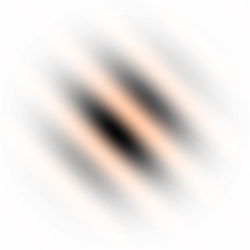
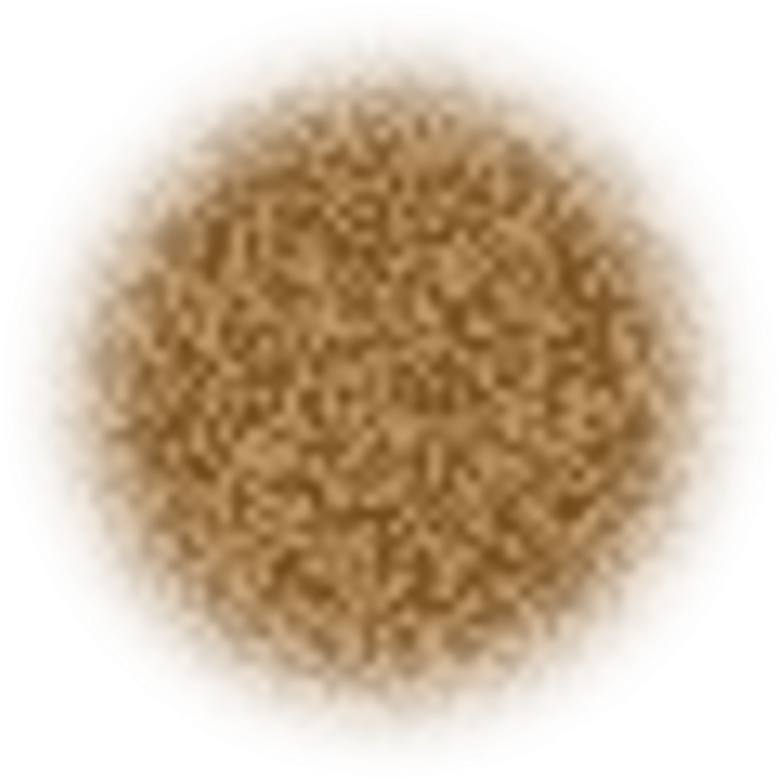
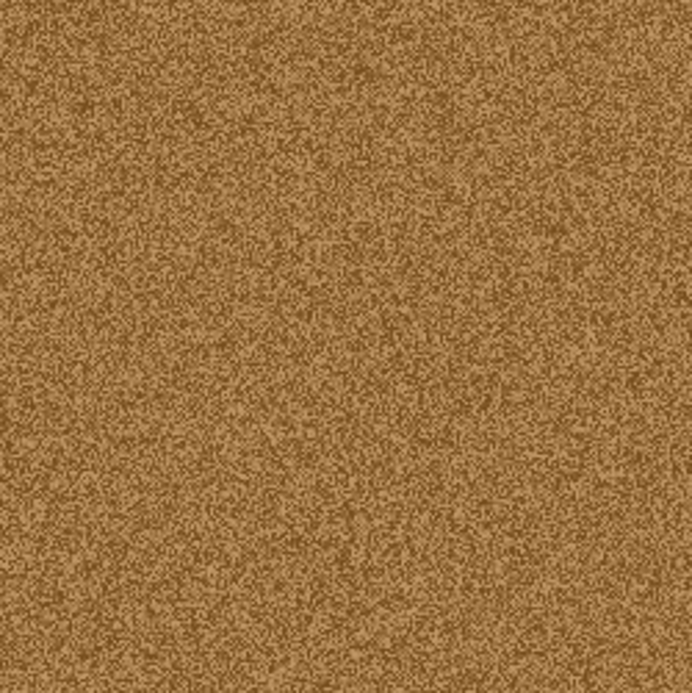
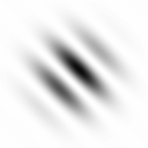

<!DOCTYPE html>
<html>
<head>
  <title>Zandstorm</title>

  <script src="https://unpkg.com/jspsych@8.2.2"></script>
  <script src="https://unpkg.com/fabric@7.1.0/dist/index.min.js"></script>

  <script src="https://unpkg.com/@jspsych/plugin-preload@2.1.0"></script>
  <script src="https://unpkg.com/@jspsych/plugin-call-function@2.1.0"></script>
  <script src="https://unpkg.com/@jspsych/plugin-html-button-response@2.1.0"></script>
  <script src="https://unpkg.com/@jspsych/plugin-html-keyboard-response@2.1.0"></script>
  <script src="https://unpkg.com/@jspsych/plugin-canvas-keyboard-response@1.1.3"></script>
  <script src="https://unpkg.com/@jspsych/plugin-canvas-button-response@2.1.0"></script>
  <script src="https://unpkg.com/@jspsych/plugin-survey-html-form@2.1.0"></script>
  <script src="https://unpkg.com/@jspsych/plugin-fullscreen@2.1.0"></script>
  <script src="https://unpkg.com/@jspsych/plugin-survey-text@2.1.0"></script>
  <script src="https://unpkg.com/@jspsych-contrib/plugin-pipe"></script>
  <script src="https://unpkg.com/@jspsych/plugin-survey-text@2.1.0"></script>
  <script src="https://unpkg.com/@jspsych/plugin-browser-check@2.1.0"></script>

  <script src="https://code.jquery.com/jquery-4.0.0.min.js"></script>

  <link href="https://unpkg.com/jspsych@8.2.2/css/jspsych.css" rel="stylesheet" type="text/css" />
  <link href="exp_4_style.css" rel="stylesheet" type="text/css" />

</head>
<body oncontextmenu='return false;'></body>

<script>
/*
    blue
    Rgb 45,0,200
    Hex #2d00c8

    yellow
    Rgb 255,204,0
    Hex #ffcc00

    pink
    Rgb 255,102,153
    Hex #ff6699

    orange
    Rgb 254,153,0
    Hex #fe9900

*/

///////////////////////////////////////////////
///
///
///  EXPEIMRENT SCRIPT
///
///
///////////////////////////////////////////////


  const jsPsych = initJsPsych({
        // show_progress_bar: true,
        message_progress_bar: '',
        on_finish: function() {
          // jsPsych.data.displayData('json');
          // window.location.href = 'https://lerenkijken.nl/';
        }
  });

  const testing_mode = false  


    // add url variables
  let exp_version = '0_7_1'
  const exp_id = 'exp_4_v'+exp_version
  console.log("Exp id: "+exp_id)
    
  
  const url_vars = jsPsych.data.urlVariables()
  url_vars['exp_version'] = exp_version
  url_vars['exp_id'] = exp_id
  
  const exp_start_datetime = Date.now()
  url_vars['exp_start_datetime'] = Date(exp_start_datetime)
  url_vars['exp_start_UTCms'] = exp_start_datetime

  const user_info_trial = {
    type: jsPsychBrowserCheck,
    data: url_vars,
  };

  let get_device_info = () => jsPsych.data.get().filter({trial_type: "browser-check"})['trials'][0]
  

  //  constants
  const vividness_single_frame_duration = 100;
  const vividness_noise_duration = 2000;
  const hidden_stimulus_trial_index = testing_mode ? 2 : 10;  // in testing mode 2;  in real mode 10 
  const total_vividness_trials =  testing_mode ? 2 : 10;      // in testing mode 2;  in real mode 10 
  const hidden_stimulus_opacity = 0.15;
  const vividness_opacities = [0, 0.14, 0.28, 0.44, 0.60];

  const global_imagined_tilt = jsPsych.randomization.sampleWithoutReplacement(['right', 'left'], 1)[0];
  const hidden_stimulus_congruency = jsPsych.randomization.sampleWithoutReplacement(['congruent', 'incongruent', 'absent'], 1)[0];


  let dynamic_noise_duration = 3000;
  let single_frame_duration = 100;
  let inter_trial_interval = 800;
  const total_task_duration = 3.2 *(60_000) // 3 minutes   ; 

  let main_task_start_time = null;
  let running_trial_number = 0;
  let external_condition = null;

  let running_score = 0

  const target_opacity = 0.15;
  let gabor_opacity;
  let opacity_boost = 0.4

  const break_every_n_trials = 5

  const n_practice_trials = 3

  // make 15 trials per cong/incong/absent condition, resulting in total of 45 detection trials 

  const trials_per_condition = testing_mode ? 1 : 15;      // in testing mode 2;  in real mode 15 
  
  const practice_gabors = jsPsych.randomization.shuffle(['right', 'left', 'absent'])
  const main_task_gabors = jsPsych.randomization.repeat(['right', 'left', 'absent'], trials_per_condition)
  
  const practice_and_main_gabors = [ 
    ...practice_gabors,
    ...main_task_gabors
  ]

  const total_main_trials = practice_and_main_gabors.length

  let delta_times;

  jsPsych.data.addProperties({
    vividness_hidden_stimulus_opacity: hidden_stimulus_opacity,
    main_task_duration_ms: total_task_duration,
    main_task_stimulus_opacity: target_opacity,
    global_imagined_tilt: global_imagined_tilt,
    hidden_stimulus_congruency: hidden_stimulus_congruency,
    testing_mode: testing_mode
  });
  


  const canvas_size = [400, 400];
  const noise_imgs_dim = [250, 250];
  const gabor_img_dim = [250, 250];

  
  const noise_file_paths = [];

  for (let i = 0; i < 50; i++) {
    const img_src = `imgs/rand_noise_${i}.png`;
    noise_file_paths.push(img_src);
  }

  function get_fabric_noise_imgs(){
    // let noise_files = [];
    const fabric_noise_imgs = [];

    for (let i = 0; i < 50; i++) {
      const img_src = `imgs/rand_noise_${i}.png`;
      // noise_files.push(img_src);

      const img = new Image();
      img.src = img_src;

      const fabric_img = new fabric.Image(img, {
        left: 0,
        top: 0,
        width: noise_imgs_dim[0],
        height: noise_imgs_dim[1],
        originX: 'left',
        originY: 'top'
      });

      fabric_img.scaleToWidth(canvas_size[0]);
      fabric_noise_imgs.push(fabric_img);
    }
    return fabric_noise_imgs
  }

  const gabor_left_img = new Image();
  gabor_left_img.src = 'imgs/gabor_left.png';

  const gabor_right_img = new Image();
  gabor_right_img.src = 'imgs/gabor_right.png';

  function getGaborFile(orientation) {
    return orientation === 'left' ? 'imgs/gabor_left.png' : 'imgs/gabor_right.png';
  }

  function getGaborImageObject(orientation) {
    return orientation === 'left' ? gabor_left_img : gabor_right_img;
  }

  function makeFabricGabor(imageObj, opacity) {
    const gabor = new fabric.Image(imageObj, {
      left: canvas_size[0] / 2,
      top: canvas_size[1] / 2,
      width: gabor_img_dim[0],
      height: gabor_img_dim[1],
      opacity: opacity,
      originX: 'center',
      originY: 'center'
    });
    gabor.scaleToWidth(canvas_size[0]);
    return gabor;
  }


  const button_left_html = `</img>`
  const button_absent_html =  `</img>`
  const button_right_html = `</img>`

  // const preload_old = {
  //   type: jsPsychPreload,
  //   images: [...noise_files, 
  //   'imgs/Lieke.png','imgs/Rick.png',
  //   'imgs/gabor_left.png', 'imgs/gabor_right.png',  "imgs/sand_circle.png",
  //   'imgs/gabor_left_sand.png', 'imgs/gabor_right_sand.png',
  //   'imgs/sandstorm.png', 'imgs/noise_sandstorm.png', 'imgs/sandstorm_intro.png',
  //   'imgs/left_key.png', 'imgs/right_key.png',  'imgs/up_down_key.png',    
  //   'imgs/key_gabor_coupling.png',
  //  ],
   
  //   save_trial_parameters: {
  //     images: false
  //   }
  // };

  let preload_start_timestamp;
  let preload_finish_timestamp;
  let stims_to_preload = [...noise_file_paths, 
    'imgs/Lieke.png','imgs/Rick.png',
    'imgs/gabor_left.png', 'imgs/gabor_right.png',  "imgs/sand_circle.png",
    'imgs/gabor_left_sand.png', 'imgs/gabor_right_sand.png',
    'imgs/sandstorm.png', 'imgs/noise_sandstorm.png', 'imgs/sandstorm_intro.png',
    'imgs/left_key.png', 'imgs/right_key.png',  'imgs/up_down_key.png',    
    'imgs/key_gabor_coupling.png',
   ]
  
  const preload = {
      type: jsPsychCallFunction,
      async: true,
      func: function(done){
          preload_start_timestamp = performance.now();
          
          jsPsych.pluginAPI.preloadImages(
              stims_to_preload, callback_complete = () =>{
              preload_finish_timestamp = performance.now()
              console.log("Preloanding took "+ ((preload_finish_timestamp - preload_start_timestamp)/1000).toFixed(2) + ' seconds' )
          }
          )
          done()
      },
  } 


  // =====================================================
  // HULPFUNCTIES VOOR UITLEG
  // =====================================================
  function zebraLabel(orientation) {
    return orientation === 'left' ? 'LINKS' : 'RECHTS';
  }

  function zebraName(orientation) {
    return orientation === 'left' ? 'Lieke' : 'Rick';
  }

  function oppositeOrientation(orientation) {
    return orientation === 'left' ? 'right' : 'left';
  }

  function arrowLabel(orientation) {
    return orientation === 'left' ? 'linkerpijl' : 'rechterpijl';
  }

  function zebraImageHTML(orientation, width = 220) {
    const transform = orientation === 'right' ? 'scaleX(-1)' : 'scaleX(1)';
    const alt = zebraName(orientation);
    const height = Math.round(width * 0.85);
    return `
      
    `;
  }

  function sandstormImageHTML(width = 260) {
    return `
      
    `;
  }

  // =====================================================
  // DEMOGRAFIE
  // =====================================================


  // const demographics = {
  //   type: jsPsychSurveyHtmlForm,
  //   preamble: '<h2>Eerst twee korte vragen</h2>',
  //   html: `
  //     <div style="max-width:500px; margin:20px auto; text-align:left;">
  //       <p>
  //         Hoe oud ben je?<br>
  //         <input type="number" name="age" min="4" max="130" required style="padding:6px; width:120px;">
  //       </p>

  //       <p>
  //         Wat is je geslacht?<br>
  //         <label><input type="radio" name="gender" value="male" required> Jongen / man</label><br>
  //         <label><input type="radio" name="gender" value="female" required> Meisje / vrouw</label><br>
  //         <label><input type="radio" name="gender" value="other" required> Anders</label>
  //       </p>
  //     </div>
  //   `,
  //   button_label: "Verder",
  //   save_trial_parameters: {
  //     preamble: false,
  //     html: false,
  //     button_label: false
  //   },
  //   data: {
  //     phase: "demographics"
  //   },
  //   on_finish: function(data) {
  //     const response = data.response;
  //     data.age = Number(response.age);
  //     data.gender = response.gender;
  //   }
  // };

//zebraverhaal
  const zebra_intro = {
    type: jsPsychHtmlButtonResponse,
    stimulus: `
      <div style="max-width:900px; margin:0 auto; text-align:center;">
        <h2>Welkom bij het zebra-spel</h2>
        ${zebraImageHTML(global_imagined_tilt, 280)}
        <p>
          Dit is zebra <strong>${zebraName(global_imagined_tilt)}</strong>. De strepen van ${zebraName(global_imagined_tilt)} lopen naar <strong>${zebraLabel(global_imagined_tilt)}</strong>.
        </p>
      </div>
    `,
    choices: ['Verder'],
    save_trial_parameters: {
      stimulus: false,
      choices: false
    },
    data: {
      phase: 'zebra_intro'
    }
  };

  let sandstorm_intro_preamble = `
            <h3><strong>Straks kijk je door je verrekijker in de zandstorm zoals hierboven.</strong></h3>

            <p>In een zandstorm is het moeilijk om iets goed te zien.<p>
            <p>
            Daarom is het jouw taak om straks steeds de <strong>strepen van ${zebraName(global_imagined_tilt)} in te beelden</strong>.
            </p>
        `
  let intro_canvas_size = [260,260]
  const sandstorm_intro = {
      type: jsPsychCanvasButtonResponse,
      canvas_size: intro_canvas_size,
      choices: ['Verder'],
      prompt: sandstorm_intro_preamble,
      save_trial_parameters: {
        stimulus: false,
        choices: false,
        canvas_size: false
      },
      stimulus: function() {
        


        // document.getElementById("jspsych-canvas-stimulus").style.margin = 'auto';

        // const sp1 = document.createElement("div")
        // sp1.innerHTML = preamble;
        // const sp2 = document.getElementById("jspsych-canvas-stimulus");
        // const parentDiv = sp2.parentNode;
        // parentDiv.insertBefore(sp1, sp2);


        const shuffled_noise_imgs = jsPsych.randomization.shuffle([...get_fabric_noise_imgs()]);

        const canvas = new fabric.StaticCanvas("jspsych-canvas-stimulus", {
          backgroundColor: 'rgba(0,0,0,0)'
        });

        // const gabor_image_obj = getGaborImageObject(orientation);
        // const hidden_gabor = makeFabricGabor(gabor_image_obj, hidden_stimulus_opacity);
        
        let img_sand_filter = new fabric.Rect({
            fill:'#A66B25',
            opacity:0.7,
        })

        let circle_clipPath = new fabric.Circle({
          radius: shuffled_noise_imgs[0].width / 2,
          top: 0,
          left: 0,
          originX: 'center', originY: 'center',
        });

        let telescope_width = intro_canvas_size[0]/ 20
        let telescope = new fabric.Circle({
          radius: intro_canvas_size[0]/ 2 - telescope_width/ 2,
          top: intro_canvas_size[0]/ 2,
          left: intro_canvas_size[0]/ 2,
          originX: 'center', originY: 'center',
          fill: 'rgba(0,0,0,0)',
          stroke: 'k',
          strokeWidth: telescope_width
        });


        img_sand_filter.clipPath = circle_clipPath;
        
        let nth_frame = 0;

        interval_ID = setInterval(() => {
          canvas.remove(...canvas.getObjects());

          shuffled_noise_imgs[nth_frame].scaleToWidth(intro_canvas_size[0])

          shuffled_noise_imgs[nth_frame].clipPath = circle_clipPath;


          canvas.add(shuffled_noise_imgs[nth_frame]);

         img_sand_filter.set({
            width:  shuffled_noise_imgs[nth_frame].width,
            height: shuffled_noise_imgs[nth_frame].height,
            left: intro_canvas_size[0] / 2,
            top: intro_canvas_size[1] / 2,
            scaleX: shuffled_noise_imgs[nth_frame].scaleX,
            scaleY: shuffled_noise_imgs[nth_frame].scaleY,
            originX: 'center', originY: 'center',
          })

          img_sand_filter.setCoords()
          canvas.add(img_sand_filter);
          canvas.add(telescope);
          

          canvas.renderAll();
          nth_frame = (nth_frame + 1) % shuffled_noise_imgs.length;
        }, 100);
      },
      on_finish: function() {
        clearInterval(interval_ID);
      }
    };


  const stripes_intro = {
    type: jsPsychHtmlButtonResponse,
    stimulus: `
      <div style="max-width:900px; margin:0 auto; text-align:center;">
        <p style="font-size:26px;"><strong>Dit zijn de strepen die je moet inbeelden</strong></p>
        
        <p>
          Dit plaatje laat een klein stukje van de strepen van ${zebraName(global_imagined_tilt)} zien.
        <br>
          Als je straks in de zandstorm kijkt,<br>probeer dan de strepen van ${zebraName(global_imagined_tilt)} zo goed als je kan voor je te zien in de storm.
        </p>
      </div>
    `,
    choices: ['Verder'],
    save_trial_parameters: {
      stimulus: false,
      choices: false
    },
    data: {
      phase: 'stripes_intro'
    }
  };

//deel 2


  function make_vividness_instruction_trial(trial_index, orientation) {
    const title_text = trial_index === 1
      ? 'Zometeen komt de eerste zandstorm.'
      : 'Er komt weer een zandstorm.';
    const prompt_text = trial_index === 1
      ? `Probeer zo goed mogelijk de <strong>strepen van ${zebraName(orientation)}</strong> in te beelden in de zandstorm.`
      : `Beeld je opnieuw zo goed mogelijk de <strong>strepen van ${zebraName(orientation)}</strong> in.`;

    return {
      type: jsPsychHtmlButtonResponse,
      stimulus: `
        <div style="max-width:850px; margin:0 auto; text-align:center;">
          <h2>${title_text}</h2>
          <p>
            ${prompt_text}
          </p>
          <p>
            Hier zie je de strepen nog een keer:
          </p>
          <div style="margin:16px 0;">
            
      `,
      choices: ['Start'],
      save_trial_parameters: {
        stimulus: false,
        choices: false
      },
      data: {
        phase: "vividness_instruction",
        vividness_trial_index: trial_index,
        imagined_tilt: orientation
      }
    };
  }

  function make_vividness_noise_trial(trial_index, orientation, show_hidden_stimulus = false) {
    let interval_ID;

    return {
      type: jsPsychCanvasKeyboardResponse,
      canvas_size: canvas_size,
      trial_duration: vividness_noise_duration,
      choices: "NO_KEYS",
      save_trial_parameters: {
        stimulus: false,
        choices: false,
        canvas_size: false
      },
      stimulus: function() {

        const shuffled_noise_imgs = jsPsych.randomization.shuffle([...get_fabric_noise_imgs()]);

        const canvas = new fabric.StaticCanvas("jspsych-canvas-stimulus", {
          backgroundColor: 'rgba(0,0,0,0)'
        });


        let circle_clipPath = new fabric.Circle({
          radius: shuffled_noise_imgs[0].width / 2,
          top: 0,
          left: 0,
          originX: 'center', originY: 'center',
        });

        let telescope_width = canvas_size[0] * 0.03
        let telescope = new fabric.Circle({
          radius: canvas_size[0]/ 2 - telescope_width/ 2,
          top: canvas_size[0]/ 2,
          left: canvas_size[0]/ 2,
          originX: 'center', originY: 'center',
          fill: 'rgba(0,0,0,0)',
          stroke: 'k',
          strokeWidth: telescope_width
        });


        

        const gabor_image_obj = getGaborImageObject(orientation);
        const hidden_gabor = makeFabricGabor(gabor_image_obj, hidden_stimulus_opacity);
        
        let img_sand_filter = new fabric.Rect({
            fill:'#A66B25',
            opacity:0.7,
        })


        let nth_frame = 0;

        interval_ID = setInterval(() => {
          canvas.remove(...canvas.getObjects());

          shuffled_noise_imgs[nth_frame].clipPath = circle_clipPath;
          
          canvas.add(shuffled_noise_imgs[nth_frame]);

          if (show_hidden_stimulus) {
            canvas.add(hidden_gabor);
          }

         img_sand_filter.set({
            width:  shuffled_noise_imgs[nth_frame].width,
            height: shuffled_noise_imgs[nth_frame].height,
            left: canvas_size[0] / 2,
            top: canvas_size[1] / 2,
            scaleX: shuffled_noise_imgs[nth_frame].scaleX,
            scaleY: shuffled_noise_imgs[nth_frame].scaleY,
            originX: 'center', originY: 'center',
          })

          img_sand_filter.clipPath = circle_clipPath;
          img_sand_filter.setCoords()

          canvas.add(img_sand_filter);
          canvas.add(telescope)

          canvas.renderAll();
          nth_frame = (nth_frame + 1) % shuffled_noise_imgs.length;
        }, vividness_single_frame_duration);
      },
      data: {
        phase: "vividness_noise",
        vividness_trial_index: trial_index,
        imagined_tilt: orientation,
        hidden_real_stimulus_present: show_hidden_stimulus ? 1 : 0,
        hidden_real_stimulus_opacity: show_hidden_stimulus ? hidden_stimulus_opacity : 0
      },
      on_finish: function() {
        clearInterval(interval_ID);
      }
    };
  }

  function make_vividness_rating_trial(trial_index, orientation) {

    return {
      type: jsPsychSurveyHtmlForm,
      preamble: () =>  { 
        let q_html =  (trial_index > 2) ? '' : `<p>Kies het plaatje dat er het meest op lijkt.</p>`
        return `
        <div style="text-align:center; max-width:1000px; margin:0 auto;">
          <h2>Hoe goed "zag" je de strepen in je <i>INBEELDING?</i></h2>
          <p>Anders gevraagd: Hoe goed lukte het "voor-je-zien" van de strepen in je hoofd op een schaal van 5?</p>`+
          
          q_html + 
        `</div>
      `},
      html: () =>  {


        // handle inconsistency resposnse and visuals awareness check & vividness rating
        let gabor_file; 
        let awareness_resp;
        let awareness_check_trial = jsPsych.data.get().filter({phase: "awareness_check"}).values()[0]

        if (awareness_check_trial ) {
          awareness_resp = awareness_check_trial.response.noticed_real_stimulus_last_trial 
          awareness_resp = awareness_resp == 'none' ? orientation : awareness_resp
          gabor_file = `imgs/gabor_${awareness_resp}_sand.png`

        } else {
           gabor_file = `imgs/gabor_${orientation}_sand.png`
        }

        let choices_html = `
        <div style="
          display:flex;
          justify-content:center;
          gap:20px;
          flex-wrap:wrap;
          max-width:1100px;
          margin:20px auto 0 auto;
        ">`

        let hinted_fivepoint_labels = ['<h3>1</h3><p>(Helemaal niet)<p>', '<h3>2</h3>', '<h3>3</h3>', '<h3>4</h3>', '<h3>5</h3><p>(Super goed)<p>']
        let fivepoint_labels = [
          '<h3 style="margin-left:1.5em;margin-right:1.5em">1</h3>', 
          '<h3 style="margin-left:1.5em;margin-right:1.5em">2</h3>', 
          '<h3 style="margin-left:1.5em;margin-right:1.5em">3</h3>', 
          '<h3 style="margin-left:1.5em;margin-right:1.5em">4</h3>', 
          '<h3 style="margin-left:1.5em;margin-right:1.5em">5</h3>']
         
        for (let i =0; i < 5; i++) {
          let img_div = `<div style="position:relative; width:140px; height:140px; margin-top:8px; border:6px solid #000000; border-radius:73px; overflow:hidden; background-image:url('imgs/noise_sandstorm.png'); background-size:cover;">
              
              </div>`

          img_div = (trial_index > 2) ? '' : img_div
          let rating_labels = (trial_index > 2) ? fivepoint_labels : hinted_fivepoint_labels

          choices_html += `<label style="cursor:pointer; text-align:center;">
            <input type="radio" name="vividness" value="${i+1}" required>`+
              img_div+ 
            `<div style="margin-top:8px;">${rating_labels[i]}</div>
          </label>`
        }
        choices_html += `</div>`

     
        return choices_html
      },
      button_label: "Verder",
      save_trial_parameters: {
        preamble: false,
        html: false,
        button_label: false
      },
      data: {
        phase: "vividness_rating",
        vividness_trial_index: trial_index,
        imagined_tilt: orientation,
      },
      on_finish: function(data) {
        const response = data.response;
        data.vividness_rating = Number(response.vividness);
        data.selected_opacity = vividness_opacities[data.vividness_rating - 1];
      }
    };
  }

  const awareness_check = {
    type: jsPsychSurveyHtmlForm,
    preamble: `
      <div style="max-width:900px; margin:0 auto; text-align:center;">
        <h2><strong>Nog één vraag!</strong></h2>
        <p>Waren er in het <strong>allerlaatste</strong> rondje echt strepen te zien?</p>
      </div>
    `,
    html: `
      <div style="max-width:700px; margin:30px auto; text-align:left; font-size:18px;">
        <p>
          <label>
            <input type="radio" name="noticed_real_stimulus_last_trial" value="left" required>
            Ja, er waren echte strepen naar LINKS:
          </label>
          </img>
        </p> 

        <p>
          <label>
            <input type="radio" name="noticed_real_stimulus_last_trial" value="right" required>
            Ja, er waren echte strepen naar RECHTS:
          </label>
           </img>
        </p>

        <p>
          <label>
            <input type="radio" name="noticed_real_stimulus_last_trial" value="none" required>
            Nee, er waren GEEN echte strepen.
          </label>
        </p>
      </div>
    `,
    button_label: "Verder",
    save_trial_parameters: {
      preamble: false,
      html: false,
      button_label: false
    },
    data: {
      phase: "awareness_check",
      actual_hidden_stimulus_trial: hidden_stimulus_trial_index
    },
    on_finish: function(data) {
      const response = data.response;
      data.noticed_real_stimulus_last_trial = response.noticed_real_stimulus_last_trial || "";
      data.correct_detection_last_trial = 'no_useful_data';
    }
  };

//DEEL 2


  function key_to_response(resp_choice) {
    if (resp_choice === 0) return 'left';
    if (resp_choice === 1 ) return 'absent';
    if (resp_choice === 2) return 'right';
    
    return 'no_response';
  }

  function get_correct_response_label(external_condition) {
    if (external_condition === 'left') return 'left';
    if (external_condition === 'right') return 'right';
    if (external_condition === 'absent') return 'absent';
    return 'undefined';
  }

  function get_congruency(imagery_condition, external_condition) {
    if (external_condition === 'no_response') return 'no_response';
    if (external_condition === 'absent') return 'absent';
    if (imagery_condition === external_condition) return 'congruent';
    return 'incongruent';
  }

  function sample_external_condition() {
    return jsPsych.randomization.sampleWithoutReplacement(['left', 'right', 'absent'], 1)[0];
  }

  // const global_imagery_condition = global_imagined_tilt;

  const main_left_gabor = makeFabricGabor(gabor_left_img, 1);
  const main_right_gabor = makeFabricGabor(gabor_right_img, 1);

  function make_global_imagery_instruction(imagery_condition) {
    return {
      type: jsPsychHtmlButtonResponse,
      stimulus: `
      <div style="max-width:900px; margin:0 auto; text-align:center;">
        <h2><strong>Nu begint het zoeken in de zandstrom!</strong></h2>

          <div style="margin:10px 0 15px 0;">
            ${zebraImageHTML(imagery_condition, 180)}
          </div>

          <p>
            Blijf tijdens alle volgende rondes de <strong>strepen naar ${zebraLabel(imagery_condition)} inbeelden</strong>.
          </p>

          <p>Je zal soms <strong>Lieke</strong> zien, soms <strong>Rick</strong> en soms <strong>GEEN zebra</strong>.</p>
          

          <p>
            Jij blijft dus de strepen inbeelden, maar kijkt ook goed óf er een zebra is en wélke dan. 
          </p>
        </div>
      `,
      choices: ['Verder'],
      data: {
        phase: 'global_imagery_instruction',
        imagery_condition: imagery_condition
      },
      save_trial_parameters: {
        stimulus: false,
        choices: false
      }
    };
  }

  function make_dynamic_trial(imagery_condition, noise_duration = null) {
    let interval_ID;
    let timestamp;
    let gabor_fabric_img;

    let img_sand_filter = new fabric.Rect({
        fill:'#A66B25',
        opacity:0.7,
    })
    

// `</img>`
    return {
      type: jsPsychCanvasButtonResponse,
      canvas_size: canvas_size,
      trial_duration: () => (running_trial_number <= n_practice_trials ? null :  noise_duration), // if trial number is 1 or 2 give unlimited time for response
      save_trial_parameters: {
        stimulus: false,
        choices: false,
        canvas_size: false
      },
      choices: [button_left_html, button_absent_html, button_right_html],
      // button_html: (choice) => {`</img>`},
      stimulus: function() {

        

        // ensure first 3 practice trials incluce all options (then an equal number of each gabor, but shuffled)
        external_condition = practice_and_main_gabors[running_trial_number-1]

        // boost opacity every 13 presnt-trials
        let n_left_trials = jsPsych.data.get().filter({phase: "main_trial", external_condition :'left'}).count()
        let n_right_trials = jsPsych.data.get().filter({phase: "main_trial", external_condition :'right'}).count()
        let n_present_trials = n_left_trials + n_right_trials + 1
        let if_boost_opacity = ((n_present_trials % 13) == 0 )

        if (external_condition !== 'absent' && if_boost_opacity){
          gabor_opacity =  target_opacity + opacity_boost 
        } else {
          gabor_opacity =  target_opacity
        }


        if (external_condition === 'left') {
          gabor_fabric_img = makeFabricGabor(gabor_left_img, 1);         

        } else if (external_condition === 'right') {
          gabor_fabric_img = makeFabricGabor(gabor_right_img, 1);;
        } else {
          gabor_fabric_img = null;
        }

        let shuffled_noise_imgs = jsPsych.randomization.shuffle([...get_fabric_noise_imgs()]);

        timestamp = performance.now();
        let canvas = new fabric.StaticCanvas("jspsych-canvas-stimulus", {
          backgroundColor: 'rgba(0,0,0,0)',
          centeredScaling: true
        });
        

        let circle_clipPath = new fabric.Circle({
          radius: shuffled_noise_imgs[0].width / 2,
          top: 0,
          left: 0,
          originX: 'center', originY: 'center',
        });

        let telescope_width = canvas_size[0] * 0.03
        let telescope = new fabric.Circle({
          radius: canvas_size[0]/ 2 - telescope_width/ 2,
          top: canvas_size[0]/ 2,
          left: canvas_size[0]/ 2,
          originX: 'center', originY: 'center',
          fill: 'rgba(0,0,0,0)',
          stroke: 'k',
          strokeWidth: telescope_width
        });


        let nth_frame = 0;
        delta_times = [];


        interval_ID = setInterval(() => {
          canvas.remove(...canvas.getObjects());

          shuffled_noise_imgs[nth_frame].clipPath = circle_clipPath

          canvas.add(shuffled_noise_imgs[nth_frame]);
          nth_frame = (nth_frame + 1) % shuffled_noise_imgs.length;

          if (external_condition !== 'absent' && gabor_fabric_img !== null) {
            gabor_fabric_img.opacity = gabor_opacity;
            canvas.add(gabor_fabric_img);
          }
        
          img_sand_filter.set({
            width:  shuffled_noise_imgs[nth_frame].width,
            height: shuffled_noise_imgs[nth_frame].height,
            left: canvas_size[0] / 2,
            top: canvas_size[1] / 2,
            scaleX: shuffled_noise_imgs[nth_frame].scaleX,
            scaleY: shuffled_noise_imgs[nth_frame].scaleY,
            originX: 'center', originY: 'center',
          })
//
          img_sand_filter.clipPath = circle_clipPath;
          img_sand_filter.setCoords()

          canvas.add(img_sand_filter);
          canvas.add(telescope)
//

          canvas.renderAll();

          delta_times.push(Math.round(performance.now() - timestamp));
          timestamp = performance.now();
        }, single_frame_duration);
      },

      response_ends_trial: true,
      data: function() {
        
        return {
          phase: 'main_trial',
          trial_number: running_trial_number,
          imagery_condition: imagery_condition,
          external_condition: external_condition,
          gabor_opacity: external_condition === 'absent' ? 0 : gabor_opacity,
          correct_response: external_condition,
          stim_congruency: get_congruency(imagery_condition, external_condition),
          noise_duration: noise_duration,
          single_frame_duration: single_frame_duration
        };
      },
      on_finish: function(data) {
        clearInterval(interval_ID);

        data.single_frame_durations = JSON.stringify(delta_times);
        data.n_recorded_frames = delta_times.length;
        data.response_label = key_to_response(data.response);
        data.correct = data.response_label === data.correct_response ? 1 : 0;
        data.resp_congruency = get_congruency(imagery_condition, data.response_label),
        data.elapsed_main_task_time_ms = Math.round(performance.now() - main_task_start_time);

        running_score += (running_trial_number > n_practice_trials ?  get_score(data.correct, data.rt) : 0) // set 
      }
    };
  }


  // let none_button_html = `</img>`
  // let divider_trial = {
  //     type: jsPsychCanvasButtonResponse,
  //     canvas_size: canvas_size,
  //     trial_duration: inter_trial_interval,
  //     choices: [none_button_html, none_button_html, none_button_html],
  //     response_ends_trial: false,
  //     stimulus: function() {

        
  //       let canvas = new fabric.StaticCanvas("jspsych-canvas-stimulus", {
  //         backgroundColor: 'rgba(0,0,0,0)',
  //         centeredScaling: true
  //       });

  //       let telescope_width = canvas_size[0] * 0.03
  //       let telescope = new fabric.Circle({
  //         radius: canvas_size[0]/ 2 - telescope_width/ 2,
  //         top: canvas_size[0]/ 2,
  //         left: canvas_size[0]/ 2,
  //         originX: 'center', originY: 'center',
  //         fill: 'rgba(0,0,0,0)',
  //         stroke: 'k',
  //         strokeWidth: telescope_width
  //       });
  //       setTimeout(()=>{
  //         canvas.add(telescope)
  //         canvas.renderAll();
  //       }, 
        
  //       inter_trial_interval*0.25)

  //     },
      
  //     data:{
  //         phase: 'trial_divider',
  //         upcoming_trial_number: running_trial_number
  //     }
  //   };
    
    
    let divider_trial = {
      type: jsPsychHtmlKeyboardResponse,
      stimulus: "<div style='font-size:32px; text-align:center;'>+</div>",
      choices: "NO_KEYS",
      trial_duration: inter_trial_interval,
      save_trial_parameters: {
        stimulus: false,
        choices: false
      },
      data: function() {
        return {
          phase: 'trial_divider',
          upcoming_trial_number: running_trial_number
        };
      }
    };


  function make_main_task_reminder(imagery_condition) {
    return {
      type: jsPsychHtmlButtonResponse,
      stimulus: ()=>{
        let time_elapsed = main_task_start_time ? Math.round(performance.now() - main_task_start_time) : 10*1000

        
        return `
        <div style="max-width:900px; margin:0 auto; text-align:center;">
          <h3>Goed bezig! Je bent al zo ver:</h3>
          <progress id="time_progress_bar" value="${running_trial_number}" max="${total_main_trials}"> </progress>
          <h3>En dit is je score:</h3> <h2>${running_score}</h2>

          <p>
            Blijf steeds goed kijken welke zebra je <strong>echt</strong> ziet in de zandstorm.
          </p>
          <p>
            Blijf ook steeds de <strong>strepen van ${zebraName(imagery_condition)} inbeelden</strong> zoals hier.
          </p>
          
          <div style="margin:18px 0;">
            
          </div>
        </div>
      `},
      choices: ['Verder'],
      save_trial_parameters: {
        stimulus: false,
        choices: false
      },
      data: {
        phase: 'main_task_reminder',
        imagery_condition: imagery_condition
      }
    };
  }

  // const password_check_inner_node = {
  //   type: jsPsychSurveyHtmlForm,
  //   preamble: '<h3>Typ hier het woord dat de onderzoeker<br>je verteld heeft om te beginnen:</h3>',
  //   html:  `<h3><input type="text" id="resp-box" name="response" size="30" ></h3>`,
  //   autofocus: 'resp-box',
  //   button_label: "Begin"
  // }

  // const password_check = {
  //   timeline: [password_check_inner_node],
  //   loop_function: function(data){
  //     let resp = jsPsych.data.get().last().values()[0].response.response
  //       if(resp.toLowerCase() === 'zebra' ){
  //           return false;
  //       } else {
  //           return true;
  //       }
  //   }
  // }


  const welcome_screen = {
    type: jsPsychHtmlButtonResponse,
    stimulus: `<h1>Welkom!</h1> `+
        `<h2>Leuk dat je mee wilt doen.</h2>`+
      `<h2>De zebra's wachten al op je!</h2>`+
    `<h3>Klik of tik hieronder om te beginnen.</h3>`,
    choices: ['Begin'],
    on_start: ()=>{
      let el = document.getElementsByClassName('jspsych-content-wrapper')[0];
      el.style.backgroundImage = `url("imgs/sandstorm_intro.png")`;
    },
    on_finish: ()=>{
      let el = document.getElementsByClassName('jspsych-content-wrapper')[0];
      el.style.backgroundImage = `url("imgs/sandstorm.png")`;
    }
  }

  
  const intro_part_2 = {
    type: jsPsychHtmlButtonResponse,
    stimulus: `
      <div style="max-width:900px; margin:0 auto; text-align:center;">
        <h2><strong>Nu begint deel 2</strong></h2>
        ${zebraImageHTML(oppositeOrientation(global_imagined_tilt), 220)}
        <p>
          Dit is een andere zebra. Zebra <strong>${zebraName(oppositeOrientation(global_imagined_tilt))}</strong>.
        <br>
          De strepen van ${zebraName(oppositeOrientation(global_imagined_tilt))} lopen naar <strong>${zebraLabel(oppositeOrientation(global_imagined_tilt))}</strong>, zoals hierboven.
        </p>
        <p>
          Jij blijft nog steeds de strepen van <strong>${zebraName(global_imagined_tilt)} inbeelden </strong>:  </img>
        </p>
        <p>
          Maar nu kan er soms ook <strong>echt een zebra</strong> in de zandstorm staan: je ziet dan de strepen van ${zebraName(global_imagined_tilt)} of ${zebraName(oppositeOrientation(global_imagined_tilt))}.
        <br>
          Laten we kort 3 voorbeelden doornemen.
        </p>
      </div>
    `,
    choices: ['Verder'],
    save_trial_parameters: {
      stimulus: false,
      choices: false
    },
    data: { phase: 'general_instruction' }
  };


  // let left_instruction_string, right_instruction_string, absent_instruction_string
  // if (get_device_info().mobile){
  //   left_instruction_string = 'klik of tik je op <strong>deze knop</strong>'
  // } else { // on laptop / desktop
  //   left_instruction_string = 'druk je op de <strong>linkerpijl</strong>'
  // }


  const example_left_screen = {
    type: jsPsychHtmlButtonResponse,
    stimulus: `
      <div style="max-width:900px; margin:0 auto; text-align:center;">
        <p style="font-size:24px;"><strong>Voorbeeld 1/3</strong></p>

        <div style="display:flex; justify-content:center; align-items:center; gap:36px; flex-wrap:wrap; margin:16px 0;">
          <div>
            ${zebraImageHTML('left', 220)}
          </div>
          <div>
            
          </div>
        </div>
           <p>
            Als je <strong>zebra Lieke</strong> ziet met strepen naar <strong>LINKS</strong>, klik of tik je op <strong>deze knop</strong>.<br>
            Probeer de knop nu uit!
            </p>
        </div>
    `,
    choices: [button_left_html],
    data: { phase: 'orientation_example_left' }
  };

  const example_right_screen = {
    type: jsPsychHtmlButtonResponse,
    stimulus: `
      <div style="max-width:900px; margin:0 auto; text-align:center;">
        <p style="font-size:24px;"><strong>Voorbeeld 2/3</strong></p>

        <div style="display:flex; justify-content:center; align-items:center; gap:36px; flex-wrap:wrap; margin:16px 0;">
          <div>
            ${zebraImageHTML('right', 220)}
          </div>
          <div>
            
          </div>
        </div>
           <p>
            Als je <strong>zebra Rick</strong> ziet met strepen naar <strong>RECHTS</strong>, klik of tik je op <strong>deze knop</strong>.<br>
            Probeer de knop nu uit!
            </p>
        </div>
    `,
    choices: [button_right_html],
    data: { phase: 'orientation_example_right' }
  };

  const example_absent_screen = {
    type: jsPsychHtmlButtonResponse,
    stimulus: `
      <div style="max-width:900px; margin:0 auto; text-align:center;">
        <h2><strong>Voorbeeld 3/3</strong></h2>

        <p>
          Als je <strong>GEEN zebra</strong> ziet, klik of tik je op <strong>deze knop</strong>.<br>
            Probeer de knop nu uit!
        </p>
      </div>
    `,
    choices: [button_absent_html],
    data: { phase: 'orientation_example_left' }
  };

  const response_instruction = {
    type: jsPsychHtmlButtonResponse,
    stimulus: `
      <div style="max-width:900px; margin:0 auto; text-align:center;">
        <h2>Wat is nu jouw taak?</h2>

        <h3>Blijf de strepen van <strong>${zebraName(global_imagined_tilt)}</strong> inbeelden.</h3>
        <h3>Kijk tegelijk goed welke zebra je <strong>echt</strong> ziet in de zandstorm.</h3>
        <h3 >
          Druk zo snel mogelijk maar probeer geen fouten te maken!
        </h3>
      </div>
    `,
    choices: ['Verder'],
    save_trial_parameters: {
      stimulus: false,
      choices: false
    },
    data: { phase: 'general_instruction' }
  };

  const start_main = {
    type: jsPsychHtmlButtonResponse,
    stimulus: `
      <div style="max-width:800px; margin:0 auto; text-align:center;">
        <h2>De zandstorm wordt heviger! De strepen zullen nu nog moeilijker te zien zijn.</h2>
        <h2>Ben jij er klaar voor?</h2>
        <h3>Je mag eerst een paar keer oefenen met zoeken, en dan gelijk door!</h3>
        <h1 style="margin-top: 2em; margin-bottom:4em;">Success!</h1>
      </div>
    `,
    choices: [`Zoek de zebra's!`],
    save_trial_parameters: {
      stimulus: false,
      choices: false
    },
    data: { phase: 'start_main' },
    on_finish: function() {
      main_task_start_time = performance.now();
      running_trial_number = 0;
    }
  };
  
  const debrief = {
      type: jsPsychHtmlButtonResponse,
      stimulus: () => `<h2>Goed gedaan!</h2>
        <h3>Je bent klaar.</h3>
        <h3>Dit is je eindscore:</h3>
        <h1>${running_score}</h1>`,
      grid_rows: 2,
      choices: ["Probeer het nog eens!", "Doe een ander Experiment"] ,
      data:{
          label:'debrief',
      },
      on_finish: function(){
          let resp_idx = jsPsych.data.get().last().select('response').values[0]
          if (resp_idx == 0){
              window.top.location.href = 'https://lerenkijken.nl/experiment/zoek-de-zebras'
          }
          if (resp_idx == 1){
              window.top.location.href = 'https://lerenkijken.nl/#experimenten' ;
          }
      },
  };
         


  const save_data = {
      type: jsPsychCallFunction,
      async: true,
      func: function(done){
          try { 
            /* To save data we need these things:
            1. make sure to have JQuery imported by this src="https://code.jquery.com/jquery-4.0.0.min.js" inside head
            2. get URL variables to get correct uid and token
            3. put all url vars as key:value pairs in the first trial object
            4. t
            */
              window.xhr = $.post('https://www.lerenkijken.nl/api/save', jsPsych.data.get().json()).done(function(){
                  if(xhr.status == 200){
                      console.log('Data was saved!');
                      done()
                  } else{
                      console.log(xhr.status);
                      done()
                  }
              }).fail(function(){
                  console.log(xhr.status);
                  done()
              });
          } catch (error){
              console.error(error);
              done()
          }
          
      },
      on_start: function(){
          // write summary data to the first object
          let summary_object = {}   

          
          summary_object.score = running_score
          summary_object.mean_rt = jsPsych.data.get().filter({phase: 'main_trial'}).select('rt').mean()
          summary_object.mean_accuracy = jsPsych.data.get().filter({phase: 'main_trial'}).select('correct').mean()
          

          jsPsych.data.get().first(1).values()[0]['user_summary_info'] = summary_object
      },

  }


  let info_speed_up_trial = {
    type: jsPsychHtmlButtonResponse,
    stimulus: `<h3 style="margin-top:5em;">In deze oefenrondes had je veel tijd om te reageren.<br>Maar vanaf nu moet je sneller zijn!</h3><h3 style="margin-top: 3em; margin-bottom: 8em;">Als je niet snel genoeg bent, krijg je een melding!</h3>`,
    choices: ['Zoek verder!'],
    save_trial_parameters: {
      stimulus: false,
      choices: false
    },
    data: { phase: 'info_speed_up_trial' },
  };

  let info_too_slow = {
    type: jsPsychHtmlButtonResponse,
    stimulus: `<h1 style="margin-top:5em;">Oei! Je was net niet snel genoeg!</h1><h3 style="margin-top: 4em; margin-bottom: 8em;">Probeer nog sneller op een knop te drukken!</h3>`,
    choices: ['Zoek verder!'],
    save_trial_parameters: {
      stimulus: false,
      choices: false
    },
    data: { phase: 'info_too_slow' },
  };


  const timed_main_task = {
    timeline: [
      {
        type: jsPsychCallFunction,
        func: function() {
          running_trial_number++;
        },
        save_trial_parameters: { func: false },
        data: { phase: 'increment_trial_counter' }
      },

      { // only add dividers after first tiral
        timeline: [divider_trial],
        conditional_function: function() {
          return running_trial_number > 1;
        }
      },

      { // only show reminders after n trials
        timeline: [make_main_task_reminder(global_imagined_tilt)],
        conditional_function: function() {
          return running_trial_number > 1 && (running_trial_number - 1) % break_every_n_trials === 0;
        }
      },

      make_dynamic_trial(  // always show the main trial procedure
        global_imagined_tilt,
        dynamic_noise_duration,
      ),
      
      { // only show after practice trials 
        timeline: [info_speed_up_trial],
        conditional_function: function() {
          return running_trial_number == n_practice_trials;
        }
      },

      {  // only show "too slow" warnings after no-reponse trials
        timeline: [info_too_slow],
        conditional_function: function() {
          let last_main_trial = jsPsych.data.get().filter({phase: "main_trial"}).last().values()[0]

          return running_trial_number > n_practice_trials && (last_main_trial.response_label == 'no_response');
        }
      },

    ],

    loop_function: function() {
      return running_trial_number <= total_main_trials; // running trial number starts with 1 
    }
  };


//TIMELINE 
  const timeline = [user_info_trial, preload, welcome_screen, 
   zebra_intro, sandstorm_intro, stripes_intro];


 

  for (let t = 0; t < total_vividness_trials; t++) {
    const trial_index = t + 1;
    let trial_orientation, show_hidden_stimulus;   // = global_imagined_tilt;

    if (trial_index === hidden_stimulus_trial_index){

        if (hidden_stimulus_congruency == 'absent') {
            show_hidden_stimulus = false
            trial_orientation = 'left' // irrelevant
        }
        if (hidden_stimulus_congruency == 'congruent') {
            show_hidden_stimulus = true
            trial_orientation = global_imagined_tilt
        }    
        if (hidden_stimulus_congruency == 'incongruent') {
            show_hidden_stimulus = true
            trial_orientation = (global_imagined_tilt == 'left') ? 'right' : 'left'
        }
    } else {
        show_hidden_stimulus = false
        trial_orientation = global_imagined_tilt;
    }


    timeline.push(make_vividness_instruction_trial(trial_index, global_imagined_tilt));
    timeline.push(make_vividness_noise_trial(trial_index, trial_orientation, show_hidden_stimulus));
    timeline.push(make_vividness_rating_trial(trial_index, global_imagined_tilt, show_hidden_stimulus));
  }

  timeline.push(awareness_check);

  timeline.push(intro_part_2, example_left_screen, example_right_screen, example_absent_screen, response_instruction);

  timeline.push(make_global_imagery_instruction(global_imagined_tilt));
  timeline.push(start_main);
  timeline.push(timed_main_task);
  timeline.push(save_data);
  timeline.push(debrief); // save_data_pipe


  jsPsych.run(timeline);

  // utility functions

  function get_score(accuracy, rt, allowed_time=dynamic_noise_duration) {
    if( rt>300 ){
      return  Math.max( 0,  Math.round(accuracy * (allowed_time - rt) * 0.1) )
    } else {
      return 0
    }
    
  }


  


/*
Version changes/updates log:

v 0.2.0:
  1.	Log start time and version.
  2.	Part 2: 2 trials with more time + notification if too slow
  3.	Add scoring system: show score at reminder trials and at the end.
  4.  Typos

v 0.2.1: 
  1. add sanity check trials: every 13th target-present trial show very visible gabor.

v 0.3.0:  (21-04-2026 11:15)
  1. add manual saving functionality (crtl + Q) if someone stops halfway
  2. add text box to leave comments at the end of the exp
  3. add saving functionality to save data directly to OSF using jsPsych data-pipe (also with manual saving).
  4. duration of main trials set to 3.2 minutes (was initially 3 minutes), to account for practice trials.

v 0.3.1:  (21-04-2026 11:45)
  1. text changes 
  2. changed target OSF saving folder to the LerenKijken OSF page

v 0.3.2:  (21-04-2026 15:15)
  1. disable right click

v 0.4.0:  (22-04-2026 13:15)
  1. added clearer instructions for gabor / arrow key coupling
  2. added help in practice rounds

v 0.5.0:  (22-04-2026 14:15)
  1. lowered buttons to avoid cursor on sandstorm
  2. included 3 practice trials one of each type: left right absent

v 0.5.1:  (28-04-2026 10:15)
  1. delta_times logs now per trial.
  2. set in awareness_check trial: data.correct_detection_last_trial = 'no_useful_data';
  3. ensure score stays above 0.

v 0.5.2:  (11-05-2026 12:00)
  1. removed automatic data saving
  2. added note explaining no data is saved 
  3. removed password check 
  4. reload page at exp end


v 0.6.1:  (2-9-2026 15:00) FOR lerenkijken.nl
  1. balanced trial numbers across conditions
  2. scoring: only points when rt > 300 ms
  3. Fixed wording and made mobile friendly


v 0.6.2:  (2-9-2026 15:00) FOR lerenkijken.nl
  1. fixed progress bar updating
  2. have 10 imagery trials (trial 10 is critical)
  3. add testing mode
  4. update preloading
  5. disable fullscreen

v 0.7.0:  (3-9-2026 ) FOR lerenkijken.nl 
  1. add jquery to fix saving functionality to website 

v 0.7.1:  (3-9-2026 ) FOR lerenkijken.nl 
  1. update radio button style
  2. added comments
  3. update to preloading images procedure
  4. update vividness rating labels
*/

</script>
</html>